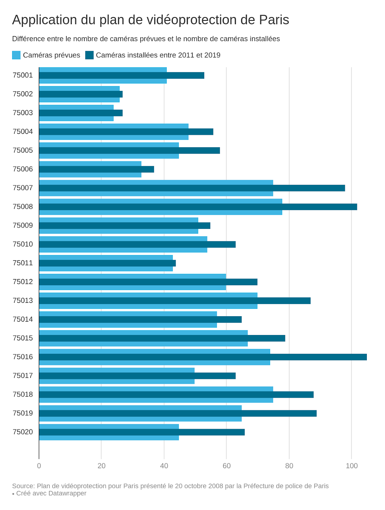
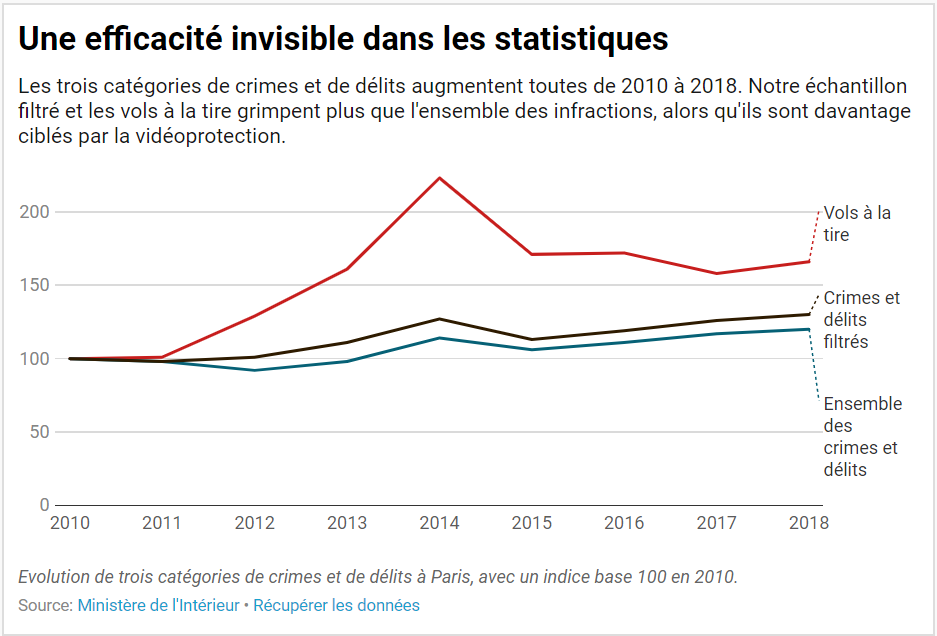

C’était le braquage de trop. Un lundi soir d’octobre 2018, un jeune
homme
est interpellé à la sortie de la station de métro “Ecole vétérinaire” de
Maison-Alfort (Val-de-Marne) par la BAC. Dans son sac, le couteau japonais
ensanglanté avec lequel il vient d’agresser la pharmacie de l’avenue du
docteur Arnold Netter, dans le 12ème arrondissement de Paris. Quelques jours
plus tôt, il avait braqué deux autres pharmacies du même arrondissement,
avenue du général Bizot et rue de Capri.
“Il était dégoûté. Il leur a dit
"Ouech ! Comment vous avez fait !"” racontait alors
au Parisien un
témoin de
la scène. Le braqueur, qui empruntait toujours le même chemin en métro après
ses braquages, a été confondu par les 1316 caméras installées à Paris entre
2011 et 2018, dans le cadre du plan de vidéo-protection pour Paris.
Présenté en octobre 2008 par Michel Gaudin, alors préfet de police
de Paris, ce plan de vidéo-protection visait à renforcer les capacités
opérationnelles de la préfecture de Police, dans quatres domaines
préalablement définis: la gestion de la circulation routière, le maintien de
l’ordre public “lors de grands rassemblements et de manifestations”, la
prévention et la détection de la délinquance, et enfin la prévention du
risque terroriste. Ce dernier domaine n’est pas des moindres. En 2005 déjà,
Nicolas Sarkozy, alors ministre de l’Intérieur, se disait “très
impressionné”
par le rôle des caméras de vidéosurveillance britanniques dans l’arrestation
des suspects après l’attentat de Glasgow et les tentatives d’attentats à
Londres. En juillet 2007, désormais Président de la République, il remet une
lettre de mission à sa ministre de l’Intérieur, Michèle Alliot Marie, la
chargeant de
"déployer plus de moyens de vidéosurveillance, qui sont un
instrument essentiel de prévention et de répression des actes terroristes".
L’une des première mission du plan de vidéo-protection était de garantir une
meilleure répartition des caméras, afin de couvrir la totalité de la ville
et
de lutter contre ce que Michel Gaudin désignait alors comme une
"inégalité
territoriale". A l’époque, la préfecture de police de Paris ne comptait
encore que quelques 120 caméras appartenant à la préfecture de police sur la
voie publique, auxquelles il fallait ajouter les 206 caméras de la Villle de
Paris, principalement situées dans l’hypercentre et aux alentours des
institutions à protéger telles que les ministères ou les ambassades. “Alors
qu’aujourd'hui, la vidéo concerne surtout les quartiers du Centre de Paris
et
la protection des institutions, le plan 1.000 caméras prévoit un maillage
cohérent dans l'ensemble des arrondissements. Il prend en compte les
quartiers qui souffrent le plus de la criminalité” annonçait Michel Gaudin
en
novembre 2009 au Conseil municipal de Paris.
Pour un coût total prévu entre 80 et 100 millions d’euros, chaque
arrondissement devait être équipé en moyenne de 60 caméras supplémentaires,
soit une fourchette comprise entre 25 et 93, selon le Plan de
vidéoprotection
pour Paris présenté par la préfecture de Police en 2009. Le lieu
d’implantation de chaque caméra devait résulter
“d'une analyse concrète
et
approfondie des points de congestion du trafic, des sites accidentogènes,
des
besoins relatifs à la sécurisation des grands rassemblements et des lieux
les
plus touchés par la délinquance”.
Dans les faits, on constate que trois arrondissements comptent
aujourd’hui plus de 93 caméras de vidéo-protection: il s’agit des VIIème,
VIIIème, et XVIème arrondissements. En revanche, le nombre minimum de
caméras
installées par arrondissement a lui, été respecté, puisque les
arrondissements les moins bien dotées (le IIème et le IIIème) en comptent
aujourd’hui 27.

A partir de ce graphique, deux questions peuvent se poser. Premièrement,
comment cela se fait-il qu’il existe une telle disparité entre
arrondissements ? Selon Gérard Gachet (LR), adjoint au maire, chargé de la
sécurité et de la prévention de la délinquance dans le 16e arrondissement,
le
plus doté de Paris, c’est à la ville de Paris que revient la décision du
nombre de caméras.
“Cela a augmenté à intervalles réguliers, car nous
éprouvons le besoin d’en mettre à certains endroits”, explique-t-il,
soulignant que les élus d’arrondissement sont simplement consultés sur
l’emplacement des caméras.
“On nous soumet un projet de la préfecture de
police, et on est arrivé, la dernière fois il y a 3 ans, où 8 caméras
supplémentaires étaient prévues, à faire changer d’emplacement des projets
d’installation qui ne nous semblaient pas nécessaires”.
Selon lui, le grand nombre de caméras de surveillance sur son territoire,
bien que relativement dans la moyenne une fois ramené nombre de kilomètres
carrés, est dû à la présence du périphérique, et donc de caméras de
vidéo-verbalisation (dispositif visant à verbaliser les infractions
routières), ainsi qu’à la présence d’ambassades, ainsi qu’aux problèmes de
prostitution aux alentours du Bois de Boulogne.
Du côté du 12e, où la différence est plutôt à la défaveur de
l’arrondissement, Fabrice Moulin, Adjoint à la Maire chargé de la sécurité
et de la prévention (PS) souligne que cette différence n’a pas
suscité de “débat particulier”, et confirme ne pas être décisionnaire quant
au nombre de caméras installées.
“On donne un avis sur les priorités de
placement des caméras. La préfecture nous fait une liste, et demande aux
maires d’arrondissements ainsi qu’aux commissariats si ces caméras nous
semblent bien placées”, explique-t-il simplement. Le nombre est selon
lui
fixé en fonction du budget déterminé par la ville de Paris et la préfecture,
co-gestionnaires du plan de video-protection.
Les deux élus saluent ce dispositif.
“Ce dispositif, qui suscitait des
craintes et des réserves à ses débuts, n’est plus beaucoup contesté, même
par ceux qui se
battaient contre, et y voyaient une atteinte aux libertés”, affirme
Gérard
Gachet. Fabrice Moulin dresse le même constat, et affirme l'utilité de ce
dispositif auprès des forces de police : “Le Commissariat du 12e
arrondissement
estime
que c’est un outil utile et nécessaire, notamment pour la résolution des
faits, pour avoir des preuves, plus que pour la prévention et la dissuasion.
On sait qu’on n’évite pas certains comportement avec des caméras”,
explique
l’élu.
“Et la police plutôt demandeuse de ce genre de choses, du moment
que l'image est de bonne qualité, et qu’il y ait derriere, assez
d’effectifs pour gérer le visionnage.”
Nous avons cherché à évaluer l'impact de la vidéoprotection sur la
délinquance à Paris à partir des chiffres du Ministère de l'Intérieur. Nous
avons pour cela comparé l'évolution de trois catégories d'infractions :
l'ensemble des crimes et des délits, les vols à la tire et un échantillon
qui
rassemble les infractions particulièrement visées par la vidéoprotection
(cette dernière sélection étant basée sur un bilan de l'exploitation des
caméras datant de 2013).

Résultat : les chiffres ne suggèrent pas d'impact du plan de vidéoprotection
sur l'évolution de la délinquance. Les trois catégories d'infractions ont
toutes augmenté depuis son lancement, en décembre 2011. L'échantillon filtré
et les vols à la tire ont connu une hausse plus prononcée que l'ensemble des
crimes et des délits, alors qu'ils sont davantage visés par la
vidéoprotection.
Cette absence d'efficacité visible peut s'expliquer par un faible effet
dissuasif des caméras :
"L'idée originelle était que les individus
s'abstiennent de commettre une infraction parce qu'ils sont filmés. Mais 90%
ne s'en rendent pas compte", souligne Richard Rigaut, secrétaire
régional du
syndicat FPIP (Fédération professionnelle indépendante de la police) à
Paris.
L'écart est notable entre la hausse des vols à la tire et celle de
l'ensemble des crimes et délits : les premiers ont augmenté de 66% par
rapport à 2010, contre 20% pour la seconde catégorie.
"Les voleurs
avancent
plus vite que nous : ils s'adaptent en mettant des capuches, en utilisant
des
scooters maquillés", interprète Richard Rigaut.
L'effet dissuasif de la vidéosurveillance n'est pas davantage
prouvé par les études réalisées sur le sujet.
"Cela diminue bien la
délinquance à l'endroit précis surveillé par la caméra, nuance Laurent
Muchielli, sociologue spécialiste de la vidéosurveillance et auteur de Vous
êtes filmés ! (Armand Colin, mars 2018).
Mais cela ne fait que la déplacer
un
peu plus loin, dans un endroit non surveillé. Il n'y a pas d'impact global à
l'échelle d'une commune". Mais selon Fabrice Moulin, adjoint à la
sécurité
de
la maire PS du 12ème arrondissement de Paris, déplacer la délinquance
représente déjà un début de solution :
"S'il y a des rodéos motorisés sur
une
place où cela résonne, y installer une caméra permet de les pousser vers des
petites rues où le bruit est moins amplifié".
La vidéosurveillance ne permet pas non plus aux policiers de
repérer des délits en cours de préparation selon Laurent Mucchielli :
"C'est
impossible de voir quoi que ce soit en visionnant les images en direct,
affirme le sociologue.
Quand vous fixez le flux de personnes et de véhicules
capté par la caméra sans savoir quoi chercher, tout ce que vous pouvez
attraper c'est la migraine". La vidéosurveillance n'a notamment pas
prouvé
son utilité pour prévenir des attentats terroristes.
"Si Paris avait été
équipée du même réseau que le nôtre, les frères Kouachi n'auraient passé 3
carrefours sans être neutralisés et interpellés", avait avancé le maire
de
Nice Christian Estrosi, pionnier dans le développement de la
vidéosurveillance en France, lors d'un conseil municipal au lendemain de
l'attentat contre Charlie Hebdo en janvier 2015. Un peu plus d'un an plus
tard, un attentat au camion-bélier a tué 86 personnes sur la promenade des
Anglais après le feu d'artifice du 14 juillet.
"C'est la ville la plus
vidéosurveillée de France, mais les caméras n'ont servi à rien, souligne
Laurent Mucchielli.
Le terroriste a effectué une douzaine de repérages avec
un camion dont le tonnage est interdit de circulation sans être détecté".
S'ils concèdent son manque d'effet dissuasif, les défenseurs de la
vidéosurveillance assurent qu'elle serait précieuse afin d'arrêter les
auteurs d'un délits.
"C'est une aide dans pas mal d'affaires", estime
Richard Rigaut, notre syndicaliste policier.
"Il ne passe pas une semaine
sans qu'une agression ou un cambriolage ne soit résolu au moins en partie
grâce à la vidéosurveillance" s'enthousiasme quant à lui Gérard Gachet,
l'adjoint à la sécurité du 16ème arrondissement. Mais quelle est la
proportion précise d'affaires dans lesquelles les caméras sont utiles ?
"Cela ne représente pas plus de 3% des cas, affirme Laurent Mucchielli,
qui
a étudié leur efficacité dans la région de Marseille.
Dans la majorité des
situations, l'image est utile sans être décisive. Et elle permettra plus
souvent d'identifier une plaque d'immatriculation qu'un suspect".
Des études d'ampleur manquent pour estimer l'impact de la vidéosurveillance.
"Il n'y a pas eu d'évaluation rigoureuse en France, pointe Elodie Lemaire,
sociologue à l'Université de Picardie Jules Verne.
Pour cela, il faudrait
observer concrètement ce que deviennent les images réquisitionnées, comment
elles ont été interprétées par la police puis utilisées par la justice".
La
conseillère de Paris Danielle Simonnet (La France insoumise) réclame une
évaluation dans la capitale :
"Si nous avions un rapport qui compare le
coût
de ces caméras avec leur apport pour les résolutions d'enquête, il
montrerait à quel point ce dispositif est une gabegie financière".
"Il
y en
a beaucoup qui mériteraient d'être démantelées, alors qu'elles n'ont
toujours pas prouvé leur efficacité", ajoute celle qui est aussi tête de
liste aux prochaines élections municipales avec le collectif Décidons Paris.
Sauf surprise, une évaluation du plan de vidéoprotection ne devrait pas
arriver avant le scrutin de mars prochain.